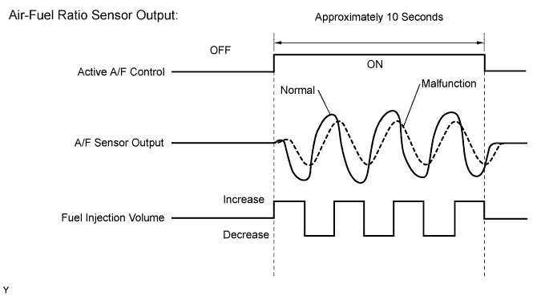
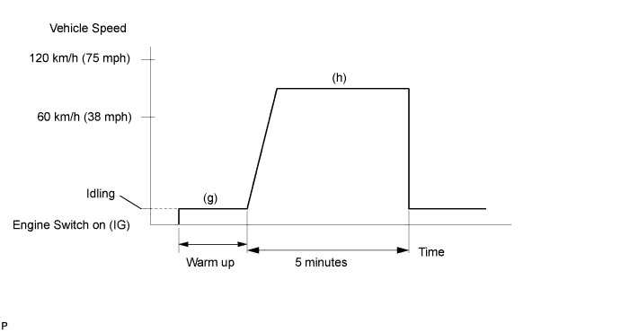

DTC P2A00 A/F Sensor Circuit Slow Response (Bank 1 Sensor 1) |
DTC P2A03 A/F Sensor Circuit Slow Response (Bank 2 Sensor 1) |
| DTC Code | DTC Detection Condition | Trouble Area |
| P2A00 | The calculated value of the air-fuel ratio (A/F) sensor response rate deterioration level is less than the threshold (2 trip detection logic). |
|
| P2A03 | The calculated value of the air-fuel ratio (A/F) sensor response rate deterioration level is less than the threshold (2 trip detection logic). |
|


| Tester Display (Sensor) | Injection Volume | Status | Voltage |
| AFS B1 S1 (A/F) | +25% | Rich | Below 3.0 |
| -12.5% | Lean | Higher than 3.35 | |
| O2S B1 S2 (HO2) | +25% | Rich | Higher than 0.55 |
| -12.5% | Lean | Below 0.4 | |
| AFS B2 S1 (A/F) | +25% | Rich | Below 3.0 |
| -12.5% | Lean | Higher than 3.35 | |
| O2S B2 S2 (HO2) | +25% | Rich | Higher than 0.55 |
| -12.5% | Lean | Below 0.4 |
| Case | A/F Sensor (Sensor 1) Output Voltage | HO2 Sensor (Sensor 2) Output Voltage | Main Suspected Trouble Area |
| 1 |   |  | - |
| 2 |  | |
|
| 3 | | |
|
| 4 | | |
|
| 1.CHECK ANY OTHER DTCS OUTPUT (IN ADDITION TO DTC P2A00 AND/OR P2A03) |
Connect the intelligent tester to the DLC3.
Turn the engine switch on (IG).
Turn the tester on.
Enter the following menus: Powertrain / Engine and ECT / DTC.
Read DTCs.
| Result | Proceed to |
| P2A00 and/or P2A03 is output | A |
| P2A00 and/or P2A03 and other DTCs are output | B |
|
| ||||
| A | |
| 2.INSPECT AIR FUEL RATIO SENSOR (HEATER RESISTANCE) |
 |
Disconnect the Air-Fuel Ratio (A/F) sensor connector.
Measure the resistance according to the value(s) in the table below.
| Tester Connection | Condition | Specified Condition |
| 1 (HA1A) - 2 (+B) | 20°C (68°F) | 1.8 to 3.4 Ω |
| 1 (HA1A) - 4 (A1A-) | Always | 10 kΩ or higher |
| 1 (HA2A) - 2 (+B) | 20°C (68°F) | 1.8 to 3.4 Ω |
| 1 (HA2A) - 4 (A2A-) | Always | 10 kΩ or higher |
|
| ||||
| OK | |
| 3.CHECK HARNESS AND CONNECTOR (ECM - AIR-FUEL RATIO SENSOR) |
 |
Disconnect the A/F sensor connector.
Measure the voltage according to the value(s) in the table below.
| Tester Connection | Switch Condition | Specified Condition |
| C22-2 (+B) - Body ground | Engine switch on (IG) | 11 to 14 V |
| C23-2 (+B) - Body ground | Engine switch on (IG) | 11 to 14 V |
Turn the engine switch off.
Disconnect the ECM connector.
Measure the resistance according to the value(s) in the table below.
| Tester Connection | Condition | Specified Condition |
| C22-1 (HA1A) - C45-22 (HA1A) | Always | Below 1 Ω |
| C22-3 (A1A+) - C45-126 (A1A+) | Always | Below 1 Ω |
| C22-4 (A1A-) - C45-125 (A1A-) | Always | Below 1 Ω |
| C23-1 (HA2A) - C45-20 (HA2A) | Always | Below 1 Ω |
| C23-3 (A2A+) - C45-103 (A2A+) | Always | Below 1 Ω |
| C23-4 (A2A-) - C45-102 (A2A-) | Always | Below 1 Ω |
| C22-1 (HA1A) or C45-22 (HA1A) - Body ground | Always | 10 kΩ or higher |
| C22-3 (A1A+) or C45-126 (A1A+) - Body ground | Always | 10 kΩ or higher |
| C22-4 (A1A-) or C45-125 (A1A-) - Body ground | Always | 10 kΩ or higher |
| C23-1 (HA2A) or C45-20 (HA2A) - Body ground | Always | 10 kΩ or higher |
| C23-3 (A2A+) or C45-103 (A2A+) - Body ground | Always | 10 kΩ or higher |
| C23-4 (A2A-) or C45-102 (A2A-) - Body ground | Always | 10 kΩ or higher |
| Tester Connection | Condition | Specified Condition |
| C22-1 (HA1A) - C46-22 (HA1A) | Always | Below 1 Ω |
| C22-3 (A1A+) - C46-126 (A1A+) | Always | Below 1 Ω |
| C22-4 (A1A-) - C46-125 (A1A-) | Always | Below 1 Ω |
| C23-1 (HA2A) - C46-20 (HA2A) | Always | Below 1 Ω |
| C23-3 (A2A+) - C46-103 (A2A+) | Always | Below 1 Ω |
| C23-4 (A2A-) - C46-102 (A2A-) | Always | Below 1 Ω |
| C22-1 (HA1A) or C46-22 (HA1A) - Body ground | Always | 10 kΩ or higher |
| C22-3 (A1A+) or C46-126 (A1A+) - Body ground | Always | 10 kΩ or higher |
| C22-4 (A1A-) or C46-125 (A1A-) - Body ground | Always | 10 kΩ or higher |
| C23-1 (HA2A) or C46-20 (HA2A) - Body ground | Always | 10 kΩ or higher |
| C23-3 (A2A+) or C46-103 (A2A+) - Body ground | Always | 10 kΩ or higher |
| C23-4 (A2A-) or C46-102 (A2A-) - Body ground | Always | 10 kΩ or higher |

|
| ||||
| OK | |
| 4.PERFORM CONFIRMATION DRIVING PATTERN |
| NEXT | |
| 5.CHECK WHETHER DTC OUTPUT RECURS (DTC P2A00 AND/OR P2A03) |
Connect the intelligent tester to the DLC3.
Turn the engine switch on (IG) and turn the tester on.
Enter the following menus: Powertrain / Engine and ECT / DTC / Pending.
Read pending DTCs.
| Result | Proceed to |
| P2A00 and/or P2A03 is output | A |
| No DTC is output | B |
|
| ||||
| A | |
| 6.REPLACE AIR FUEL RATIO SENSOR |
Replace the air fuel ratio sensor (Click here).
| NEXT | |
| 7.PERFORM CONFIRMATION DRIVING PATTERN |
| NEXT | |
| 8.CHECK WHETHER DTC OUTPUT RECURS (DTC P2A00 AND/OR P2A03) |
Connect the intelligent tester to the DLC3.
Turn the engine switch on (IG) and turn the tester on.
Enter the following menus: Powertrain / Engine and ECT / DTC / Pending.
Read pending DTCs.
| Result | Proceed to |
| No DTC is output | A |
| P2A00 and/or P2A03 is output | B |
|
| ||||
| A | ||
| ||